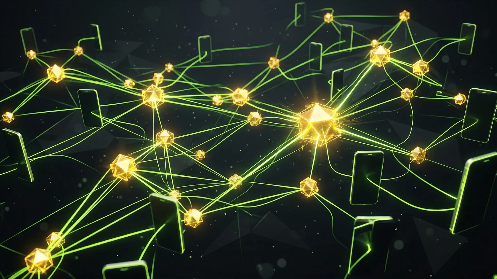
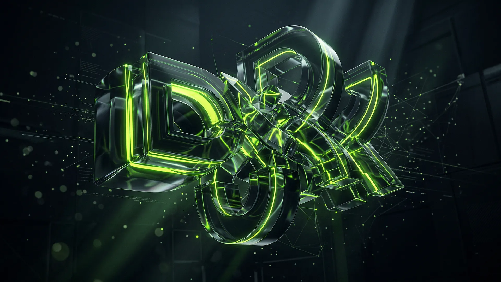
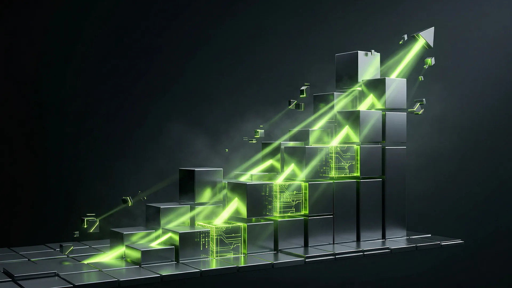
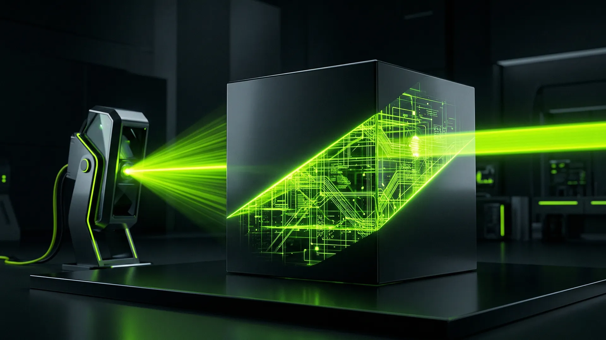
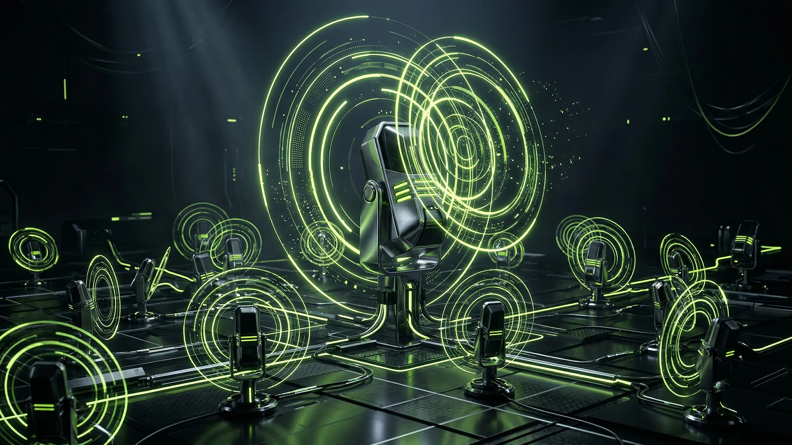
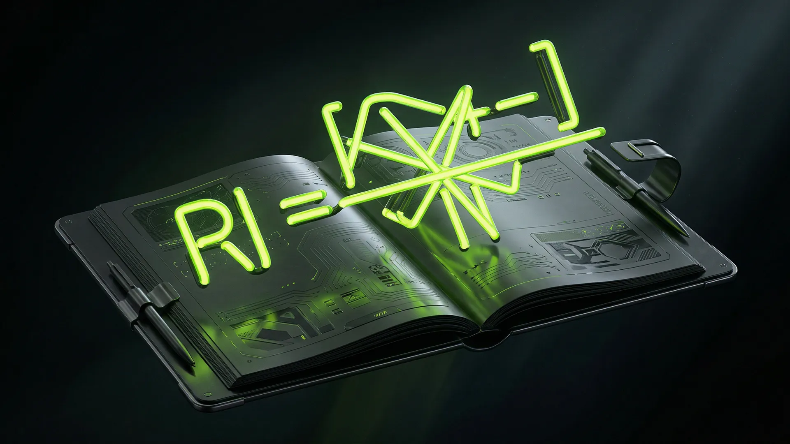
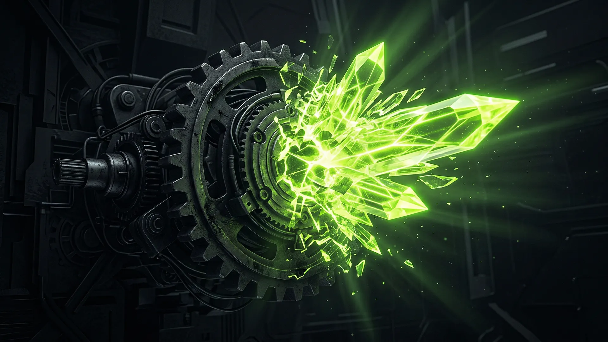
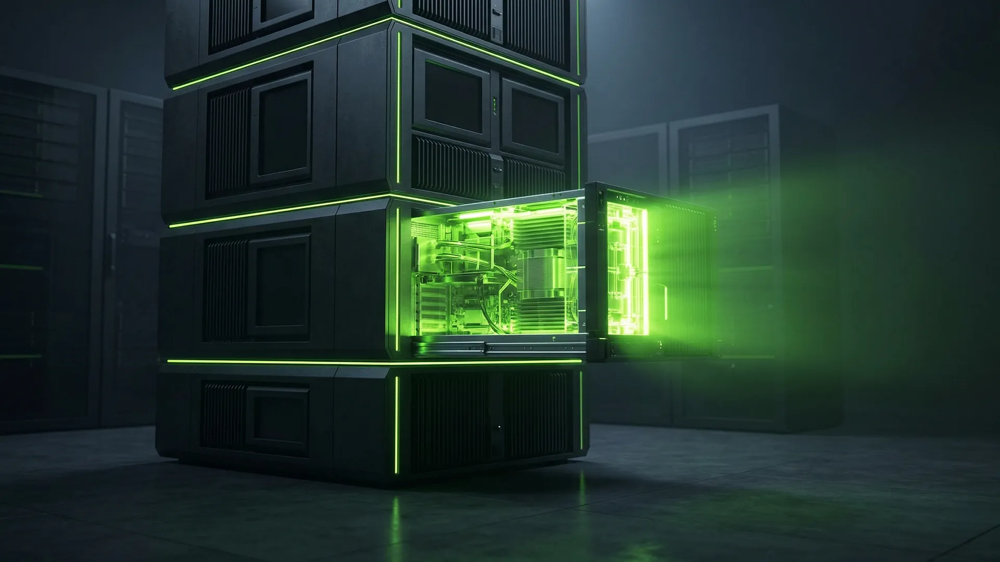
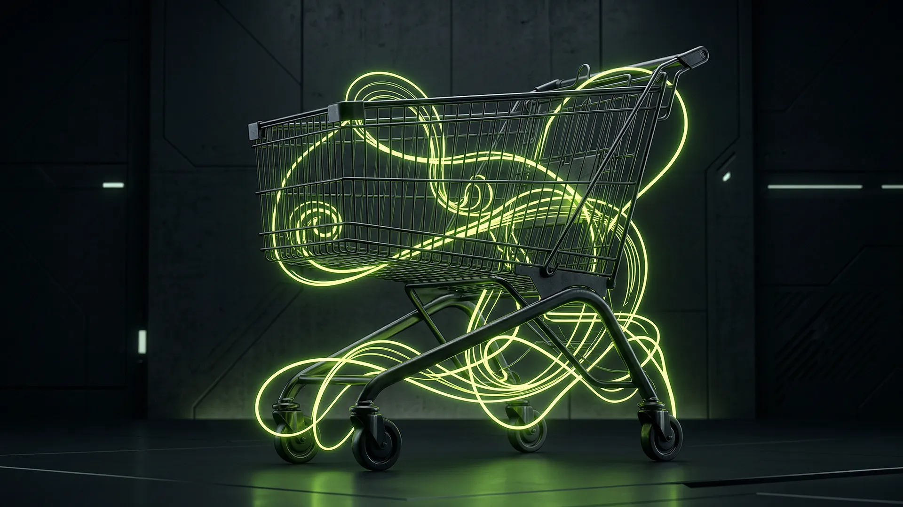

أفكار ومنهجيات
لا أكتب لمجرد صناعة المحتوى. أوثّق ما ينجح فعلاً في تسويق الأداء، وكيف يستبدل الذكاء الاصطناعي فرقاً كاملة، واستراتيجيات الإخراج الإبداعي التي تبيع حقاً — من أكثر من 10 سنوات في الميدان.
كيف استبدلت فريق وكالة مكوناً من 5 أشخاص باستخدام Claude و n8n
نظرة تكتيكية متعمقة في سير عمل الأتمتة وسلاسل أوامر Anthropic الدقيقة التي أستخدمها لإنشاء واختبار وتحليل أكثر من 300 مادة إعلانية أسبوعياً — دون توظيف كاتب محتوى مبتدئ واحد. النظام الذي بنيته لعملاء مشهور هب.

كيف تغير منصة مشاهير المشهد التسويقي في الخليج
تعرف على دور Mashhor.cloud في ربط العلامات التجارية بأبرز المؤثرين وضمان عائد استثماري حقيقي لحملاتك الإعلانية.
منصة مُنجز في مصر: مستقبل العمل الحر والتوظيف
كيف تربط منصة Munjiz الشركات الخليجية والمحلية بأفضل الكفاءات والمواهب المصرية في مجالات التسويق والتطوير.

أفضل أدوات الذكاء الاصطناعي في 2026 للمسوقين والمصممين
دليلك الشامل لأقوى وأفضل أدوات الذكاء الاصطناعي لعام 2026 التي ستضاعف إنتاجيتك واستراتيجيات التسويق خاصتك.

كيف تحترف التصميم عن طريق Canva وأهم مميزاته في 2026
استراتيجيات احترافية وميزات مخفية داخل Canva لعام 2026 تجعل تصاميمك تنافس أقوى وكالات الإعلان بأقل مجهود.

مستشار التسويق والإخراج الإبداعي لنمو شركتك
كيف يمكن لخبرة مشهور هب أن تعيد رسم مسار نمو علامتك التجارية في السوق الكويتي والخليجي.
أكاديمية مشهور: تعلم أسرار التسويق الرقمي
ارتق بمهاراتك واحترافك من خلال دورات وتدريبات عملية في أكاديمية مشهور (Mashhor Academy).

إنتاج الفيديو وصناعة المحتوى المرئي المتقدم
كيف تصنع فيديوهات إعلانية مبهرة ومربحة باستخدام تقنيات الذكاء الاصطناعي والمونتاج المتطور.
التصميم الجرافيكي الذكي: من الهوية لزيادة المبيعات
لماذا يفشل التصميم الجميل أحياناً في البيع؟ وكيف نبني هويات وتصاميم تحقق الأهداف التجارية.

كتابة المحتوى الاستراتيجي التي تضاعف مبيعاتك
الكلمات هي أداة البيع الخفية. كيفية صياغة نصوص وصفحات مبيعات تجبر العميل على الشراء.
الأتمتة الذكية للأعمال: دليلك لأدوات n8n و Make
تخلص من المهام الروتينية لتبني سيستم يقوم بالعمل تلقائياً. الأتمتة وفرت التكاليف بشكل مهول.
التسويق الإلكتروني المبني على النتائج
احصل على شريك استراتيجي يحلل الأرقام بدقة ويقلل تكلفة الاستحواذ على العميل بدلاً من الوعود الوهمية.
مكتبة الأوامر (Prompts) المدفوعة للتسويق والمحتوى
ضخِّم قدراتك مع الذكاء الاصطناعي من خلال هندسة الأوامر الجاهزة المُعدة للمسوقين وصنّاع المحتوى المحترفين.
أتمتة التسويق بالذكاء الاصطناعي
كيف تستخدم أدوات الذكاء الاصطناعي لتوفير مئات الساعات وبناء حملات تسويقية تعمل تلقائياً.

الفوز على تيك توك في دول الخليج
الإمارات والسعودية لديهما معدلات اختراق فلكية لتيك توك. اكتشف استراتيجيات المحتوى العضوي والمدفوع التي تحول المشاهدات لمبيعات.
الأتمتة الذكية لرحلة العميل
تقنيات ربط المنصات وتحليل البيانات لصناعة رحلة عميل سلسة، تزيد ولاء العملاء وتقلل التكاليف.

دليل تحسين صفحات الهبوط لزيادة التحويل
عناصر بسيطة في صفحة هبوطك يمكن أن تضاعف نسبة المبيعات بشكل ملحوظ.
استراتيجية إعلانات جوجل المتقدمة
كيف تتفوق على منافسيك في محرك البحث جوجل وتزيد المبيعات بتكلفة أقل.

إدارة حملات السوشيال ميديا باحترافية
استراتيجيات متقدمة لإدارة حسابات التواصل الاجتماعي وتحقيق تفاعل حقيقي يترجم إلى نمو في الأعمال.
قراءة بيانات الحملات الإعلانية كالمحترفين
توقف عن التركيز على الإعجابات. اكتشف المقاييس الحقيقية (KPIs) التي تحدد نجاح أو فشل حملاتك التسويقية.
توسيع نطاق الأصول الإبداعية بالذكاء الاصطناعي
تعلم كيفية استخدام Midjourney وأدوات الذكاء الاصطناعي لتوليد مئات من أشكال الإعلانات عالية الجودة في ساعات بدلاً من أسابيع.
دليل استراتيجية إعادة الاستهداف المتقدمة
توقف عن إزعاج جمهورك بنفس الإعلان الذي تجاهلوه بالفعل. دورة متقدمة في إعادة الاستهداف المتسلسل للعناصر ذات القيمة العالية.

أساسيات بناء العلامة التجارية الشخصية
لماذا يحتاج كل مؤسس شركة أو مدير تنفيذي في دول مجلس التعاون لبناء علامة تجارية شخصية قوية.
سير عمل المحتوى بالذكاء الاصطناعي: من الفكرة للنشر في ٩٠ دقيقة
كيف أستخدم خط أنابيب ذكاء اصطناعي متكامل لإنتاج وتوزيع محتوى تسويقي عالي الجودة في وقت قياسي.

تدقيق هوية العلامة التجارية: الدليل الشامل
كيف تقيّم هوية علامتك التجارية بعين ناقدة وتحدد الفجوات التي تعيق نموها في الأسواق الخليجية.

مستقبل التسويق بالمؤثرين في دول الخليج
كيف تتشكل صناعة المؤثرين في السعودية والكويت والإمارات وما هي الفرص والمخاطر التي تنتظر العلامات التجارية.

معادلة قياس عائد الاستثمار في التسويق بالمؤثرين
كيف تحسب الربح والخسارة الحقيقية من حملات المؤثرين وتتخذ قرارات مبنية على البيانات لا الأحاسيس.

دليل إعداد Meta CAPI لتجارة الخليج الإلكترونية
لماذا يجب على كل متجر إلكتروني في الخليج إعداد Meta Conversions API الآن، وكيف يتم ذلك خطوة بخطوة.
إعلانات سناب شات في الكويت: الدليل العملي الكامل
استراتيجيات محددة للكويت: كيف تستغل سناب شات للوصول لجمهور قوي الشراء وتحويل المشاهدات لمبيعات.

توقف عن بيع المميزات وابدأ ببيع التحولات
السر الذي يفصل نصوص الإعلانات الخاملة عن تلك التي تحقق مبيعات فعلية: الناس لا يشترون المنتجات، يشترون نسخة أفضل من أنفسهم.

أسرار النجاح في إعلانات سناب شات في السعودية
دليلك الشامل لاستغلال أقوى منصة اجتماعية في المملكة للوصول للجمهور وزيادة التحويل.

دليل التسويق عبر المحتوى في الشرق الأوسط
كيف تبني ثقة علامتك التجارية من خلال تقديم محتوى ذو قيمة عالية للجمهور المستهدف وتصدر نتائج البحث.

التصميم الجرافيكي الموجه نحو البيع
الفرق الشاسع بين التصميم الجميل الذي ينال الإعجابات، والتصميم الذكي الذي يحقق المبيعات والنقرات.
أدوات الذكاء الاصطناعي التي غيّرت طريقة بناء الهوية البصرية
لا، الذكاء الاصطناعي لم يلغِ المصممين — لكنه أنهى من لا يستخدمه. هذه الأدوات التي أضمّنها في كل مشروع.
استراتيجية رمضان الكاملة للعلامات التجارية الخليجية
رمضان ليس مجرد موسم — هو أكبر فرصة تسويقية في السنة في الخليج. كيف تبني خطة كاملة في 30 يوماً.
صيغ الـ Hooks التي توقف التمرير في الخليج — مع أمثلة حقيقية
هذه الصيغ مُختبَرة على أكثر من 800 إعلان في الكويت والسعودية والإمارات — وهي الأعلى CTR باستمرار.

واتساب كقناة تسويقية في الخليج — الدليل الكامل ٢٠٢٦
في الكويت، واتساب ليس تطبيق محادثة — هو قناة بيع. كيف تبني funnel متكامل من الإعلانات حتى الإغلاق.
Meta Ads مقابل Google Ads — أيهما يناسب نشاطك في الخليج؟
السؤال الأكثر تكراراً من عملاء الخليج. الإجابة تعتمد على نشاطك ومرحلة الوعي والميزانية.
مستقل أم وكالة؟ — كيف تختار شريك التسويق الصح في الكويت
هذا القرار يكلف الشركات أشهراً وآلاف الدنانير عند الخطأ. إليك المعايير الحقيقية للاختيار.
٧ أخطاء تدمر ميزانيتك الإعلانية في الكويت والخليج
إذا أردت مقالاً واحداً يشرح كيف أفكر في هدر الميزانية، وتشخيص الحملات، والانضباط الإعلاني في الكويت والخليج، فابدأ من هنا.